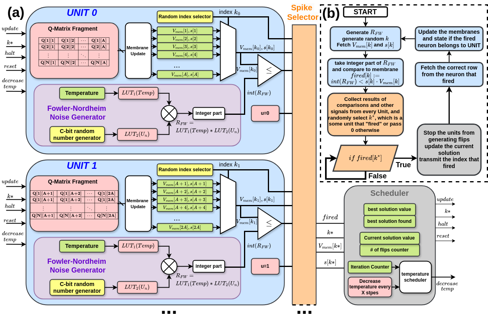
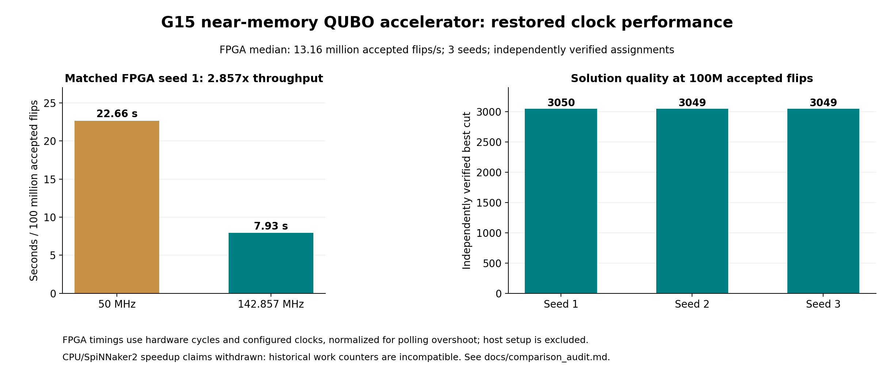

Combinatorial optimization problems are fundamental to many industrial and scientific applications, but are often NP-hard, requiring heuristic and probabilistic approaches to find good solutions fast. This paper presents the first hardware implementation of the neuromorphic-inspired NeuroSA algorithm, for accelerating Quadratic Unconstrained Binary Optimization (QUBO) problems. We show that it is possible to run a standard QUBO benchmark problem with 800 variables on a low-cost FPGA with a clock speed of approximately 144 MHz, which converges to the same solution value found by the numerical solver.
Extended evaluation: 39 full Gset graphs, 117 verified board runs, including 37 original-table instances. Signed 800-node and unsigned 1000/2000-node variants run at 100 MHz. Explore all results and the fresh named CPU comparison.
25 compute units keep graph fragments and local state beside their update logic, with compact global flip broadcasts. The search algorithm is based on NeuroSA.
The optimized design closes timing at 145.455 MHz and runs on the Zynq-7020 PYNQ board at 142.857 MHz. Across three seeds, 100 million accepted flips take 7.33-7.93 seconds, with a 7.60-second median. Independently verified best cuts are 3050, 3049, and 3049.
The matched seed-1 throughput gain over 50 MHz is 2.857x. FPGA durations use hardware counters, exclude host setup, and are normalized for polling overshoot. The abstract above retains the original paper's timing-derived results.
Interactive Sudoku & MAX-CUT demo · Comparison audit · Performance comparison and provenance · Validation report · Reproduction instructions
The NeuroSA algorithm is a neuromorphic-inspired approach to solving combinatorial optimization problems, such as the MAX-CUT problem. It uses a simulated annealing process to explore the solution space and find optimal or near-optimal solutions. The algorithm is designed to be efficient and effective, making it suitable for hardware implementation on FPGAs. In this paper, we present the first hardware implementation of the NeuroSA algorithm, demonstrating its potential for accelerating QUBO problems on low-cost FPGA platforms.


@inproceedings{lewandowski2025qubo,
author = {Maciej Lewandowski and Piotr Dudek},
title = {Design and FPGA Realization of QUBO Hardware Accelerator for MAX-CUT Problem},
booktitle = {2025 IEEE International Symposium on Circuits and Systems (ISCAS)},
year = {2025},
url = {https://ieeexplore.ieee.org/document/11044179/}
}